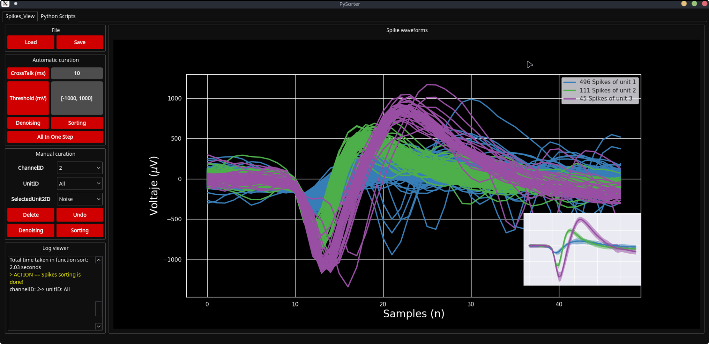

From waveforms to inspectable groups
Neural recordings contain candidate spikes alongside noise and artefacts. NeuroSorter connects automated cleaning and grouping to a graphical interface where researchers can inspect waveforms and adjust unit assignments.


The implemented analysis path
- 01LoadRecording and waveform data
- 02CleanGraph clusters and reference waveforms
- 03SortUMAP graph, Louvain and template matching
- 04InspectWaveform display and manual curation
The cleaner normalises waveforms, constructs a UMAP neighbourhood graph and partitions it using Louvain. It compares cluster waveforms with spike and artefact references.
The sorter also builds a UMAP graph and uses Louvain communities. In the variant selected by the application, a subsequent template comparison uses dynamic time warping. The interface documents manual reassignment, rejection as noise and undo of the latest edit.
- Application wiring ↗The actual cleaner and sorter imported by the GUI.
- Waveform cleaner ↗Neighbourhood graph, communities and reference comparison.
- Template-based sorter ↗Clustering followed by template comparison.
Keep automated analysis inspectable
This design gives researchers an automated starting point and a route to inspect and revise it. A useful cluster is not automatically a biologically validated neuron: waveform quality, parameters and experimental context still matter.
The public modules credit both Mikel Val Calvo and Javier Alegre-Cortés. No accuracy or generalisation claim is inferred from the presence of the algorithms. The historical application was inspected without running a new neural-recording benchmark.
Explore the project
- NeuroSorter-Interface ↗Source, historical interface and usage documentation.
- The wider research software portfolio ↗EEG, physiological acquisition and camera-based experiments.